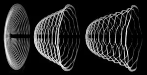
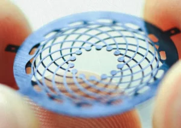

À propos
Un laboratoire qui relie materiaux, modeles et fabrication.
Nos travaux combinent experimentation, modelisation numerique et fabrication pour comprendre le comportement des materiaux a differentes echelles et soutenir des systemes d'ingenierie utiles.

Équipe
Un groupe multidisciplinaire et international.
L'equipe du LM2 regroupe cinq professeurs aux expertises complementaires, des postdoctorants, des doctorants, des etudiants a la maitrise et des collaborateurs. Les membres viennent de partout dans le monde, ce qui enrichit la culture scientifique du laboratoire.


Publications
Des resultats publies dans des revues de mecanique et de materiaux.
Les publications du LM2 documentent les avancees en mecanique multi-echelles, fabrication avancee, materiaux architecturés et structures intelligentes. La section pourra etre connectee a PolyPublie ou maintenue manuellement.
Recherche
Plusieurs expertises combinees dans des axes de recherche.
Le LM2 combine modelisation, experimentation, fabrication, conception et mecanique pour relier la comprehension fondamentale aux applications d'ingenierie.
Voir les themes